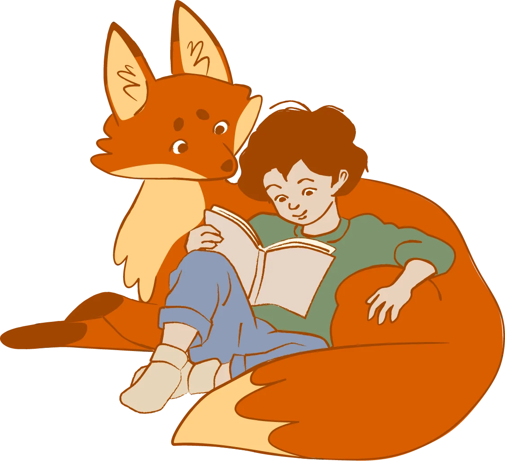
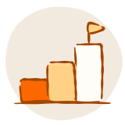
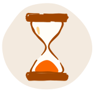
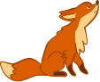

Focus support for children
Help to stay with one thing until it's done.
Foxpace helps children start a task, stay with it and finish it. It checks in gently and helps when they're stuck.
- Works fully offline
- No analytics, no tracking
- Children’s data stays on the phone
Android planned for December 2026. An iPhone version is planned, with no date yet.

Try it
What a focus check looks like
Tap the button under the phone. Foxpace asks if the child is still on the mission and offers help if they’re stuck.
Why the screen pulses
A quiet cue that doesn’t startle. The child notices it in their own time.
Light pulse
Sound and vibration
Only the pulse
Reading
Hey Mia,
Are you still working on the mission?
Need a break?

Stuck? It’s okay.
Choose one thing to try:
Try for 2 minutes only
5 minutes to relax, move, or ask someone nearby for help
Interactive example. The name and mission are made up.
Who it's for
Made for children and their families
For children and anyone else who needs help staying with a task.
Clear at a glance
Nothing to work out when focus is low.
One decision at a time
Only what's useful right now.
Calm by default
Soft colours, slow movement, no flashing.
The child is in charge
They decide when to start, pause and stop.
Support, not scorekeeping
No points, streaks or grades.
Accessible from the start
Large tap targets, scalable text, screen reader support.
Three colour themes
Pick the colours that feel most comfortable.
Adjustable text
Choose the text style that feels most comfortable, including fonts designed for easier reading.
Background sounds
Edited to stay steady and gentle.
Preview of the picker. No sound plays here.
Privacy
Everything stays on the phone
Foxpace works fully offline. There’s no account, no sign-in and no analytics. Nothing a child types leaves the phone.
- Free forever
- No account or login
- Works fully offline
- No analytics or tracking
- No ads
- No chat or social features
- No location
- Reminders are local
When it gets hard
“I’m stuck” is a real answer
It's one of the main answers, never a hidden option.

Pauses
A pause is part of the plan
Take 5 or 15 minutes. No warnings, no lost progress.
Missions
Plan ahead, or start right now
Children can plan their own.
Once
Today, tomorrow or a chosen date.
Repeats
Every day, weekdays, or chosen days.
Anytime
Saved, ready whenever.
Free Focus
Just a timer. No name needed.
Questions
Common questions
What age is Foxpace for?
Any age. Foxpace is designed for children, and works just as well for teenagers and adults.
Is it a to-do list?
It can be. Children can plan missions and see them done. Foxpace can also help during the task, with focus checks and help when they’re stuck.
Can a child use it during group work?
Yes. Turn off sound and vibration, and reminders stay visual.
Does it need the internet?
No. It works offline.
Is there a home screen widget?
Yes. It shows the next mission and its time. Tapping it opens the mission’s details; it never starts a timer. Mission titles are visible on the home screen.
Can a parent see what my child did?
No. Everything stays on the child's device.
How much does it cost?
Nothing. Foxpace is free forever.
Is there an iPhone version?
It’s planned, but there’s no date yet.

Try Foxpace on Android
Testing on Google Play opens soon. Sign up here, and we'll email you the link when it starts.
Testing is for parents and carers. You'll need a Google account to install the test version. For questions or feedback, use the same form or write to hello@foxpace.de.
For adults only. We use your email address only to reply or to send you the test link, and delete it afterwards. Privacy
Foxpace for parents is coming.
Get an email when it’s ready.